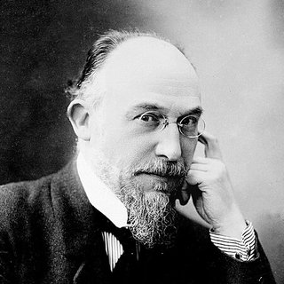

Compositores › Erik Satie

Erik Satie
El excéntrico de Montmartre: con unos pocos acordes lentos y sencillos escribió algunas de las melodías más hipnóticas de la historia.
Su vida
Nació en Honfleur, en Normandía. Estudió en el Conservatorio de París, pero sus profesores lo consideraban poco dotado y lo dejó.
Se ganó la vida como pianista en los cabarés de Montmartre, como el célebre Chat Noir, y en 1888 publicó las tres Gymnopédies, seguidas de las Gnossiennes.
Amigo de Debussy, Ravel y de los pintores de vanguardia, influyó en los jóvenes compositores franceses con su música esencial e irónica. Murió en 1925 tras una vida pobre y solitaria en Arcueil, a las puertas de París.
Retrato: Henri Manuel (1920), dominio público, de Wikimedia Commons.

Curiosidades
- En las Gnossiennes no puso líneas divisorias de compás y escribió indicaciones curiosas en lugar de las técnicas, como «desde la punta del pensamiento».
- Vestía siempre igual: lo apodaban «el caballero de terciopelo» por sus trajes de terciopelo todos idénticos.
- Tras su muerte, sus amigos encontraron en su habitación dos pianos uno encima del otro y decenas de paraguas.
Al piano
- Calma absoluta: mantén el tempo lento y regular de principio a fin.
- En la mano izquierda el bajo y el acorde se alternan como un péndulo: tócalos ligeros e iguales.
- La melodía es sencilla: déjala cantar sin añadir efectos.
Sus piezas para aprender 4 piezas

Apréndela nota a nota con Piano Learning
Con «Espera la nota» la pieza se detiene hasta que tocas la tecla correcta, en el móvil o en tu propio piano (la app te escucha). Manos por separado, velocidad desde el 10 %, partitura siempre delante.
Descárgala gratis en Google Play Gratis como La Campanella, la Marcha turca, Jingle Bells y Frère Jacques. Cientos de piezas más con una única compra, sin suscripción.